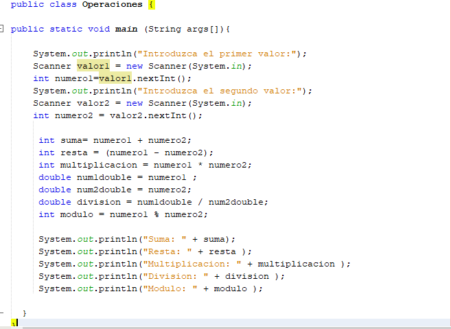

LENGUAJE DE PROGRAMACIÓN JAVASCRIPT
Índice
¿Que es javascript?
Historia javascript
Características Javascript
¿Para que sirve?
Código
¿QUÉ ES JAVASCRIPT?
Brendan Eich escribió la primera versión de JavaScript en tan solo diez días de mayo de 1995.
JavaScript es un lenguaje de programación creado para cumplir con las necesidades del paisaje envolvente del internet. Desde su concepción, ha crecido en popularidad y utilidad,
y ahora está presente no solo en el desarrollo web. JavaScript es la insignia del desarrollo web interactivo y, como resultado, es universal en esta industria.
CARACTERÍSTICAS DE JAVASCRIPT
•Lenguaje del lado del cliente
•Lenguaje orientada a objetos
•De tipado débil o no tipado
•De alto nivel
•Lenguaje interpretado
•Muy utilizado por desarrolladores
HISTORIA
Javascript es un lenguaje creado por Netscape, la compañía propietaria de un navegador con el mismo nombre hoy desaparecido, que fue precursor del actual Firefox. Su lanzamiento se produjo en 1995 en la versión de Netscape 2.0. Su autor, un programador llamado Brendan Eich, se dice que lo creó en el tiempo de una semana.
Originalmente Javascript tomó el nombre de Mocha, aunque antes de su lanzamiento fue renombrado a LiveScript. Sin embargo, ese nombre se cambiaría finalmente a Javascript como consecuencia de un acuerdo entre Netscape y Sun Microsystems, que por aquella época era la propietaria del lenguaje Java. En virtud de ese acuerdo Netscape agregó compatibilidad para Java en su navegador, a la vez que tomaba el nombre de Javascript para su lenguaje. Esta denominación, sin embargo, ha provocado históricamente toda una serie de confusiones entre la comunidad, puesto que Javascript no tiene nada que ver con Java.
¿PARA QUÉ SIRVE?
Esta tecnología crea software robusto para empresas en todo el mundo. Por si fuera poco, organizaciones como LinkedIn y Medium lo implementan al construir plataformas para que los usuarios tengan acceso a sus servicios. Lo que se puede hacer con JavaScript abarca diferentes tipos de software, como juegos, programas de computadora, aplicaciones web y hasta tecnologías de blockchain. JavaScript es posiblemente el lenguaje de programación más popular de la web.
Interactividad de interfaz o front-end:
El desarrollo web mejora solamente por el aumento de la interactividad y funciones que JavaScript ofrece.
Aplicaciones Web:
Las aplicaciones web son similares a los sitios, pero en su lugar pueden empacarse en una caja más compacta, que mejora el control de la seguridad y otros aspectos.
Juegos de navegador:
Los navegadores web actuales han cambiado mucho; los desarrolladores pueden crear juegos robustos que funcionan en ellos.
Desarrollo web dorsal o back-end:
el desarrollo web se ha transformado tanto, que JavaScript puede utilizarse para gestionar el back-end de sitios y aplicaciones.
JavaScript es robusto y puede usarse para llevar a cabo cosas asombrosas. Sin importar cuáles son tus planes de diseño o lo que esperas construir.
CÓDIGO
